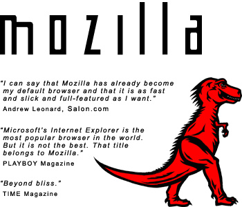

Overview
Mozilla is a world-class open source browser that is designed
from the ground up to support open internet standards across a variety of
platforms including Windows, Linux, Mac OS X, OS/2, Solaris, and many more.
Mozilla provides users with acclaimed browsing convenience along with
power features such as pop-up blocking and tabbed browsing. Mozilla also
provides a sophisticated platform for developing web and intranet
applications using cutting edge technologies such as XML, SOAP and XSLT.
Benefits
-
Mozilla offers users very good support for Web standards
and excellent compatibility with the existing Web. With Mozilla, pages lay
out correctly and quickly. In addition, Mozilla supports popular plug-ins
such as Java, Flash, Acrobat, Windows Media Player, QuickTime, and RealPlayer.
(more...)
-
The Mozilla Suite has many features to make browsing
and email easier, faster and more convenient. Once you've surfed the web
using Mozilla's pop-up blocking and sidebar, or read your email in
peace with Mozilla junk mail controls, you'll never be satisfied with
anything else.
(more...)
-
And for the power user, Mozilla provides sophisticated control over your
browsing experience. With Mozilla's advanced JavaScript controls, tabbed
browsing, image blocking, privacy management, themes
and extensions, advanced users will find everything they need to optimize
the Web experience. For customizing your entire internet experience, Mozilla
can't be beat. (more...)
-
In addition to being a great browser and mail client, Mozilla is also a web
development platform with advanced tools like the DOM Inspector, the
JavaScript Debugger, and support for XML, DHTML, XUL, SOAP, XSLT and more.
We hope you'll agree that there's no better platform for building web and intranet
applications. (more...)